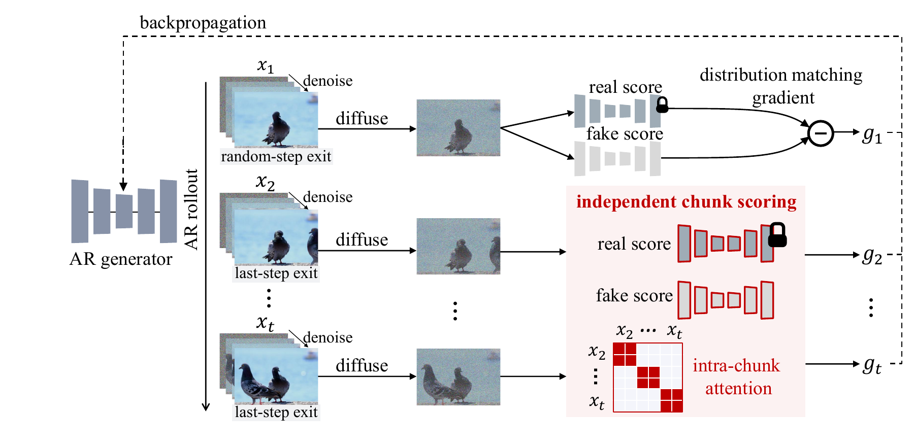

Rollout-Marginal Distillation (RMD) keeps history for generation and evaluates appearance independently. By scoring each chunk without temporal context, RMD provides a cleaner visual-quality target, followed by video-level refinement to restore temporal coherence. Trained on 5-second rollouts, it helps autoregressive video generators preserve visual quality beyond the training horizon.

@article{gao2026rmd,
title = {Rollout-Marginal Distillation for Long-Horizon Autoregressive Video Generation},
author = {Gao, Chenjian and Hu, Zhihao and Ma, Jianqi and Zhang, Jun and Zhang, Weidong and Xue, Tianfan},
journal = {arXiv preprint arXiv:2609.37925},
year = {2026}
}